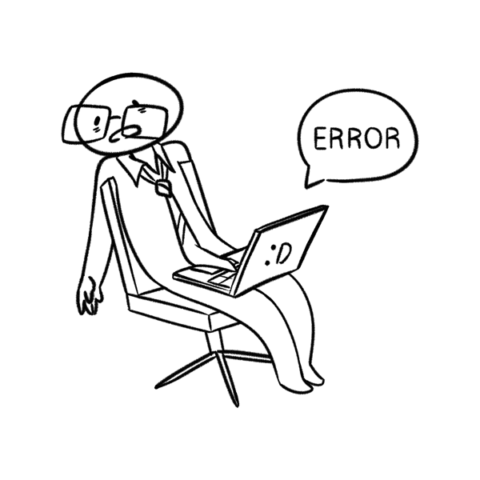

Skip

SNOOZER
Your phone's bodyguard. Pick when you want quiet, and Snoozer mutes it for you, every week.
Next
1 · Welcome
The guard bobs gently. One sentence on what the app does.
‹ BackSkip
Two kinds of quiet

Work
📳
bzz bzz
Vibrate. Calls still buzz.

Study
z
🔕
silence
Fully silent. Only alarms ring.
Next
2 · Two kinds of quiet
The Work phone shakes with buzz waves every second or so; the Study phone stays still with a sleepy "z".
‹ BackSkip
When they overlap, the quieter one wins
Study inside Work: silent for the study part, back to vibrate after.
🔔 Normal📳 Vibrate🔕 Silent📳 Vibrate
If your phone is already silent, Snoozer never makes it louder.
Next
3 · Overlaps
A "now" line sweeps across the day (7s loop); the ringer chip flips Normal → Vibrate → Silent → Vibrate as it crosses.
‹ BackSkip
A heads-up first
5 minutes before a quiet time starts. Optional; you can turn it off.
🔔Study: a normal notice with sound
🔈Work: a quiet notice, no sound
Next
4 · Reminders
The notice slides down into the mock phone, holds, slides away.
MTWTFSS
Work · Vibrate
09:00 – 17:00
Study · Silent
19:00 – 21:00
+
Tap + to plan your first quiet time. Start with Work or Study.
Get started
5 · Where things are
A dimmed mock of the week screen with a pulsing circle on "+". "Get started" goes to Home's Setup.